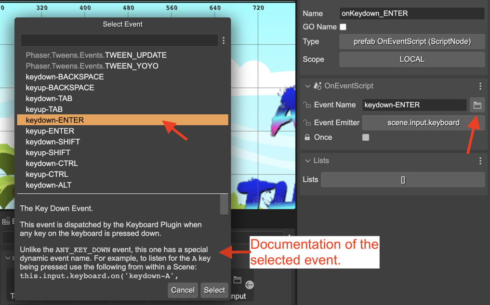
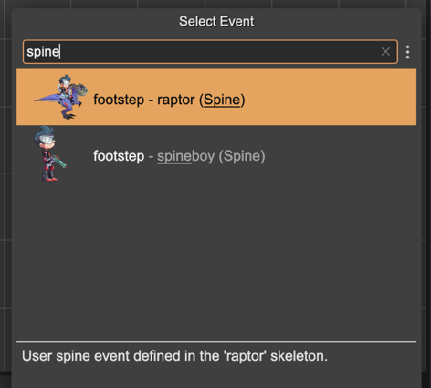
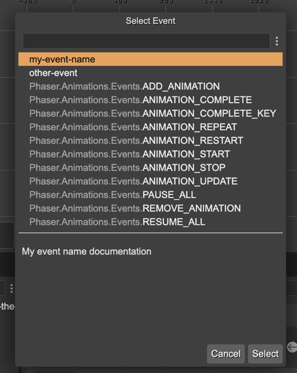

Event property type
This type of property allows selecting an event name from a list of the Phaser events plus custom-defined events. It also allows writing any arbitrary event name.
To open the list of available events, click on the search button. It opens a dialog with the Phaser and custom events:
When you click on an event name, the bottom pane of the dialog shows the documentation.
Dynamic keyboard events
Phaser provides the special Phaser.Input.Keyboard.Events.KEY_DOWN and Phaser.Input.Keyboard.Events.KEY_UP events. These events allow listening to the keys defined in the KeyCodes class, combining in this way:
this.input.keyboard.on('keydown-SPACE', listener);
Where SPACE is a constant in the KeyCodes class, and keydown (or keyup) is the name of the event.
The Event property dialog shows all combinations of keydown- and keyup- with the KeyCodes values.
Dynamic animation events
From the Phaser documentation:
The Animation Complete Dynamic Key Event.
This event is dispatched by a Sprite when an animation playing on it completes playback. This happens when the animation gets to the end of its sequence, factoring in any delays or repeats it may have to process.
The difference between this and the ANIMATION_COMPLETE event is that this one has a dynamic event name that contains the name of the animation within it. For example, if you had an animation called explode you could listen for the completion of that specific animation by using:
sprite.on('animationcomplete-explode', listener)
The Event property dialog collects all the animations available in the animation files of your project and generates the animationcomplete-key events:
Dynamic Spine events
Spine skeletons contain user events that are fired at a certain moment of an animation. The Event property dialog shows all the events defined in all the Spine skeleton assets present in the Asset Pack files:
Custom events
In addition to the Phaser events, the dialog shows custom events defined in an events.txt file. Since version 3.62.0 of the editor, this file is included in all project templates. However, you can create this file yourself in any folder of your project. The syntax is very simple. In every line, you define an event, and the name and the documentation are separated with a space. Like this:
my-event-name My event name documentation
# the editor ignores all lines starting with #
other-event My other event.
Then, the Event property dialog will show the custom events at the beginning of the list:
Event code generation
The scene compiler generates the Event properties like this:
class Dragon extends Phaser.GameObjects.Sprite {
constructor(..) {
...
}
jumpEvent = Phaser.Input.Events.GAMEOBJECT_POINTER_DOWN;
}